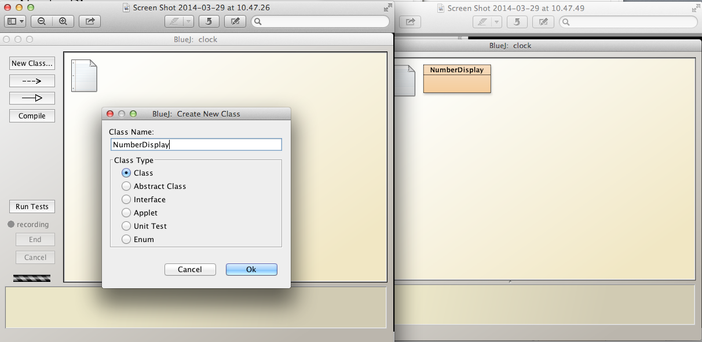
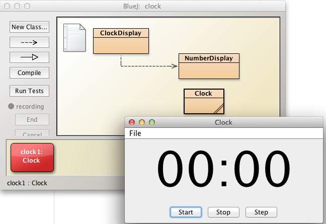

Develop NumberDisplay
Based on BlueJ ClockDisplay progressively develop NumberDisplay class to display a pair of digits to represent hours and minutes using the existing BlueJ class Clock to drive the ClockDisplay.
Set up
- Download an archive of Chapter 3 sample projects provided by BlueJ, available here. These projects are in a file named chapter03.zip.
- Save and unzip chapter03.zip into workspaceBlueJ/blueJ/ directory.
- The archive should unzip a folder chapter03 within workspaceBlueJ/blueJ/.
- On the BlueJ menu select Project | Open Project and browse to workspaceBlueJava/blueJ/chapter03.
- You should be presented with two BlueJ projects:
- clock-display
- clock-display-with-GUI
- See Figure 1
- You should be presented with two BlueJ projects:
To get a flavour of this lab:
- Open the clock-display-with-GUI project.
- Create an instance of the Clock class on the object bench
- A clock should be launched
- Press Start on the Clock
- Observe the clock starts
- Press Stop
- The clock should stop
- Press Step
- The clock should advance 1 tick
- Press Stop
- See Figure 2
We shall now build a clock project, step-by-step with functionality matching that in both clock-display and clock-display-with-GUI.
- Create a new project named clock in your workspaceBlueJ/labs/session03 folder
- See Figure 3
- Proceed to next step where we shall begin to populate the project with the necessary classes.

NumberDisplay class implementation
Observe the Clock in Figure 1.

Instances of NumberDisplay objects are used to represent both hours and minutes.
We shall now implement this class.
Assume we are designing a 24 hour clock.
In the case of the hour display, therefore,
- The valid range of numbers is [00, 23]
- Once 23 is reached, the clock rolls over to 00 on the next hour.
In the case of the minutes display
- The valid range of numbers is [00, 59]
- Once 59 is reached, the clock rolls over to 00 on the next minute.
The NumberDisplay class, therefore, requires 2 fields
- int limit
- Less than 24 for the hour display
- Less than 60 for the minute display
- int value
- The actual number displayed
- Any number in the range 00 to 23 inclusive for the hour display
- Any number in the range 00 to 59 inclusive for the minute display
- The actual number displayed
Here is the NumberDisplay class.
public class NumberDisplay
{
private int limit;
private int value;
}Create a new class, NumberDisplay, in the BlueJ: clock project window (Figure 2):
- Open the class in the editor and replace the existing code with that immediately above.
- Compile
- You should see something similar to that illustrated in Figure
Add each piece of code as it is developed below and compile as you go, attending to any syntactic errors that may be introduced.
We now write a constructor in which we will initialize the fields.
- The field value will be initialized to zero for both hour and minute displays.
- There is no requirement, therefore, to include value as a parameter in the constructor.
- The field limit will be
- 24 for the hour display
- 60 for the minute display.
- Consequently we must include limit as a parameter in the constructor.
Here is the code for the constructor:
public NumberDisplay(int limit)
{
this.limit = limit;
value = 0;
}We will also require a getter for value:
public int getValue()
{
return value;
}We require a method to increment value.
/**
* Use modular arithmetic to increment value
* thus ensuring it's always within legal range
*/
public void incrementValue()
{
value = (value + 1) % limit;
}Finally, here is a method to display the current value:
public String display()
{
//add a leading zero where necessary
if(value < 10)
{
return "0" + value;
}
else
{
return Integer.toString(value);
}
}Observe that we are using the Integer class toString method to convert the integer to a string with the expression:
- return Integer.toString(value);
Alternatively we could have used this expression:
- return "" + value;
with similar effect.

ClockDisplay class implementation
We require a ClockDisplay containing two NumberDisplays, one representing hours, the other minutes.
We also require a field representing the text to display:
- String displayTime;
Here is the class skeletion:
public class ClockDisplay
{
private NumberDisplay hours;
private NumberDisplay minutes;
private String displayTime;
}Create a new class in the BlueJ: clock project window named ClockDisplay and replace the autogenerated code with that above.
Compile the class. The result should match that shown in Figure 1.
Next we shall develop the constructor in which we will instantiate the NumberDisplay objects.
public ClockDisplay()
{
hours = new NumberDisplay(24);
minutes = new NumberDisplay(60);
}We require a method to update the displayTime field, that is, to
- Obtain the hours and minutes values in the NumberDisplay objects and
- Construct the displayTime String using these values.
public void updateDisplay()
{
this.displayTime = hours.display() + ":" + minutes.display();
}We shall now add a method named timeTick to
- increment the minutes field
- when the minutes field value reaches 60
- increment the hours field.
public void timeTick() { minutes.incrementValue(); //when minutes value is zero it means time to increment hours if(minutes.getValue() == 0) { hours.incrementValue(); } updateDisplay(); }
- increment the hours field.
We can obtain the time from a Clock object by invoking a getter:
public String getTime()
{
return displayTime;
}NumberDisplay
Here, as a check, is the complete source code for NumberDisplay:
public class NumberDisplay
{
private int limit;
private int value;
public NumberDisplay(int limit)
{
this.limit = limit;
value = 0;
}
public int getValue()
{
return value;
}
/**
* Use modular arithmetic to increment value
* thus ensuring it's always within legal range
*/
public void incrementValue()
{
value = (value + 1) % limit;
}
public String display()
{
//add a leading zero where necessary
if(value < 10)
{
return "0" + value;
}
else
{
return Integer.toString(value);
}
}
}ClockDisplay
Here, as a check, is the complete source code for ClockDisplay:
public class ClockDisplay
{
private NumberDisplay hours;
private NumberDisplay minutes;
private String displayTime;
public ClockDisplay()
{
hours = new NumberDisplay(24);
minutes = new NumberDisplay(60);
updateDisplay();
}
public void timeTick()
{
minutes.incrementValue();
//when minutes value is zero it means time to increment hours
if(minutes.getValue() == 0)
{
hours.incrementValue();
}
updateDisplay();
}
public void updateDisplay()
{
displayTime = hours.display() + ":" + minutes.display();
}
public String getTime()
{
return displayTime;
}
}Test the ClockDisplay
The BlueJ: clock project window should look something like that illustrated in Figure 1.
We shall now import a BlueJ component to enable us to test the ClockDisplay and view its output in a GUI.
Close BlueJ.
Download an archive clockBJ.zip, available here.
- Expand (unzip) the archive.
- It should expand to a folder named clockBJ.
- Copy the contents of this clockBJ folder into your working folder which should be ../workspaceBlueJ/labs/session03/clock.
- The contents of your folder clock should be similar to those displayed in Figure 2.
- Expand (unzip) the archive.
- Open BlueJ.
- The clock project should open on launching BlueJ.
- Else open it (Project | Open Project | clock).
- The project window should contain three class diagrams
- ClockDisplay
- NumberDisplay
- Clock
- All as displayed in Figure 3.
- Instantiate a Clock object on the object bench.
- A clock GUI should launch simultaneous with instantiation
- This is illustrated in Figure 4.
- Experiment with the clock:
- Press Start button
- The clock should start running
- Press End to stop the clock.
- Press Step to advance the clock 1 tick.
- Press Start button
- The clock project should open on launching BlueJ.

Exercises
Exercise 1
Create a NumberDisplay object and exercise its methods:
- display()
- getValue()
- incrementValue()
Use the inspector to observe changes in state that you bring about.
Exercise 2
Here is the code for the NumberDisplay increment method:
/**
* Use modular arithmetic to increment value
* thus ensuring it always within legal range
*/
public void incrementValue()
{
value = (value + 1) % limit;
}Refactor this code as follows:
- Discard use of the modulo operator (%).
- Instead, use the if statement.
Exercise 3
Here is the code for the NumberDisplay setValue method:
/**
* We check parameter value is in range
* If not in range, do nothing
* @param value is the new value
*/
public void setValue(int value)
{
if(value >= 0 && value < this.limit)
{
this.value = value;
}
}What would the consequences be were you to replace the line
- if(value >= 0 && value < this.limit)
with the following:
if(value >= 0 || value < this.limit)
Test the edge cases in the case of both lines of code.
By edge case is meant the situation that arises at the extreme values, for example here where:
- value less than zero
- value equal to zero
- value equal to limit
- value greater than limit
Exercise 4
List all possible results of the expression n % 10 where n is an integer variable and % is the modulus operator.
You will find the definition of an integer here
Here's a simple example that may help those unfamiliar with this operator:
- 20 % 3 evaluates to 2
- 20 / 3 is 6 with remainder 2
- 6 * 3 == 18
- 20 - 18 = 2
Evaluation:
- Simple examples can be done by observation
- Excel has a function MOD(number, divisor)
- Java % operator referred to as remainder operator
Exercise 5
Here's the method NumberDisplay display()
public String display()
{
// add a leading zero where necessary
if(value < 10)
{
return "0" + value;
}
else
{
return Integer.toString(value);
}
}Check what the result of substituting the following for return Integer.toString(value):
- return "" + value
- return value + ""
Explain any differences in behaviour.
Exercise 6
What is the value of each of the boolean variables?
Provide a short explanation in each case.
- boolean a = 8 < 9;
- boolean b = 9 < 8;
- boolean c = !(8 < 9);
- boolean d = !true;
- boolean e = !false;
- boolean f = (a == true);
- boolean g = (a && b) == true;
- boolean h = (a || b) == true;
- boolean j = (!a && !b) == false;
- boolean k = (!a || !b) == false;
Test your answers with the class LogicalOperator:
- Skeleton code provided below
- Two methods implemented
- public boolean a();
- public boolean g();
- Write the remaining methods b(), c(), d(), e(), f(), h(), j(), k() corresponding to the items above.
- Two methods implemented
public class LogicalOperator
{
public boolean a()
{
return 8 < 9;
}
//Note the internal method call to methods a() & b()
public boolean g()
{
return (a() && b()) == true;
}
}Exercise 7
- Create a new project in session03 folder named strings
- Create a new class TestStrings
- Replace the source code with the skeleton class below.
- Create a TestStrings object on the object bench
- Examine the list of methods available by right clicking on the TestStrings object
- These are illustrated in Figure 1.
Complete the method bodies in TestStrings
Satisfy yourself that your answers are correct.
public class TestStrings { String s0; String s1; public TestStrings() { s0 = new String("ICTSkills Group"); s1 = new String("ICTSkills group"); } /* * Check if s0 and s1 are equal * @return true if s0 and s1 equal else false */ public boolean equals() { return false; } /* * Check if s0 and s1 equal ignoring case * @return true if s0 and s1 equal else false */ public boolean equalsIgnoreCase() { return false; } /* * Return concatenation of s0, s1 and s * @param s string to be concatenated with instance variable strings * @return the composite string */ public String stringConcat(String s) { return ""; } /* * @param sDouble is String representation of a primitive double e.g. "100.345" * @return param converted to double */ public double convertToDouble(String sDouble) { return 0.0; } /* * @param sInteger is String representation of a primitive int e.g. "100" * @return param converted to int */ public int convertToInteger(String sInteger) { return 0; } /* * @param number to be converted to a String * @return param converted to String */ public String convertToString(int number) { return ""; } }